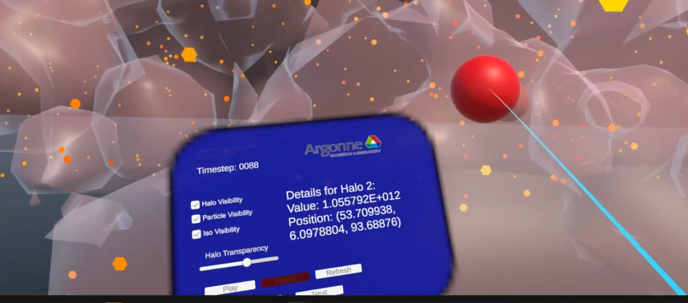
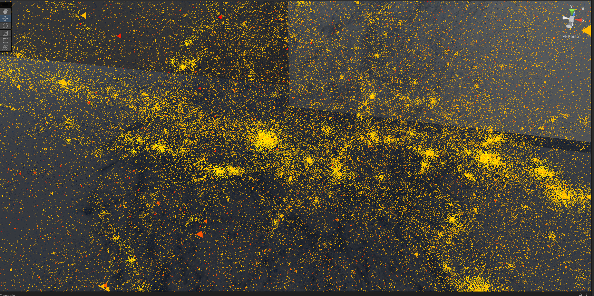

Idunnuoluwa Adeniji
PhD Student, Computer Science @ UIC
Exploring new ways to make complex scientific data more interpretable through interactive visualization.
Scientific Visualization
VR/AR/MR
Human–Computer Interaction
Scientific Computing
About
I'm a dedicated graduate student researcher with a B.Sc. in Computational Science and Engineering (Summa Cum Laude) from Kean University and currently pursuing a Ph.D. in Computer Science at the University of Illinois Chicago. My research spans scientific visualization, human–computer interaction, VR/AR/MR, and scientific computing, with the goal of developing innovative ways to interact with complex datasets. I've collaborated with the ALCF Visualization Team at Argonne National Laboratory and contributed to projects involving VR environments, WebXR, and 3D scientific data exploration. I’ve presented at venues including Sandia XR Conference, KEAN Research Days, CAAV, and eScience.
News
- Research Assistant at the Electronic Visualization Laboratory.
- Deployed ALCF OpenCosmo Visualization app.
- Poster Presentation at eScience Conference 2025.
- Research Assistant at the Electronic Visualization Laboratory.
- Research Aide at the Argonne Leadership Computing Facility.
- Teaching Assistant for CS 107 at UIC.
- Began PhD in Computer Science at UIC.
- Graduated with a B.Sc. in Computational Science and Engineering (Summa Cum Laude) from Kean University.
- Presented immersive visualization work at Sandia XR Conference and KEAN Research Days.
- Research aide at Argonne Leadership computing facility
- Co-developed VR particle data timelapse series at Argonne National Lab.
- Visting undergraduate student researcher at Argonne Leadership computing facility.
- Began BSc. at Kean University
Contact
Email: idunnuoluwaadeniji@gmail.com
Office: EVL UIC
Location: Chicago, IL
Open to: Research collaborations, Mentoring, Industry internships
Selected Publications
Using Unity for Scientific Visualization as a Course-based Undergraduate Research Experience
Exploring Large-Scale Scientific Data in Virtual Reality
Interactive Exploration of HACC Cosmology Data using WebXR
Projects

Exploring Large-Scale Scientific Data in Virtual Reality

Guardian of the Sea

Particle Data Timelapse in VR
Resume
Teaching
- Fall 2025 — Teaching Assistant, CS 107: Intro to Computing and Programming (UIC)
- Spring 2023 — Student Tutor, Calculus I & III and Python programming
Service & Activities
- Presenter — Argonne CELS Division poster presentation, Argonne Learning on the Lawn, Sandia XR Conference, KEAN Research Days, CAAV, eScience
- Member — ACM Kean Chapter, Women in Cybersecurity, National Society of Collegiate Scholars
- Scholarships — Kean STEM Scholarship, Bodzioch Scholarship for Advancement of Science
- Programs — Sustainable Research Pathways participant
- Volunteer — Kean Cougar Volunteer, Argonne coding camp, Tutoring Chicago